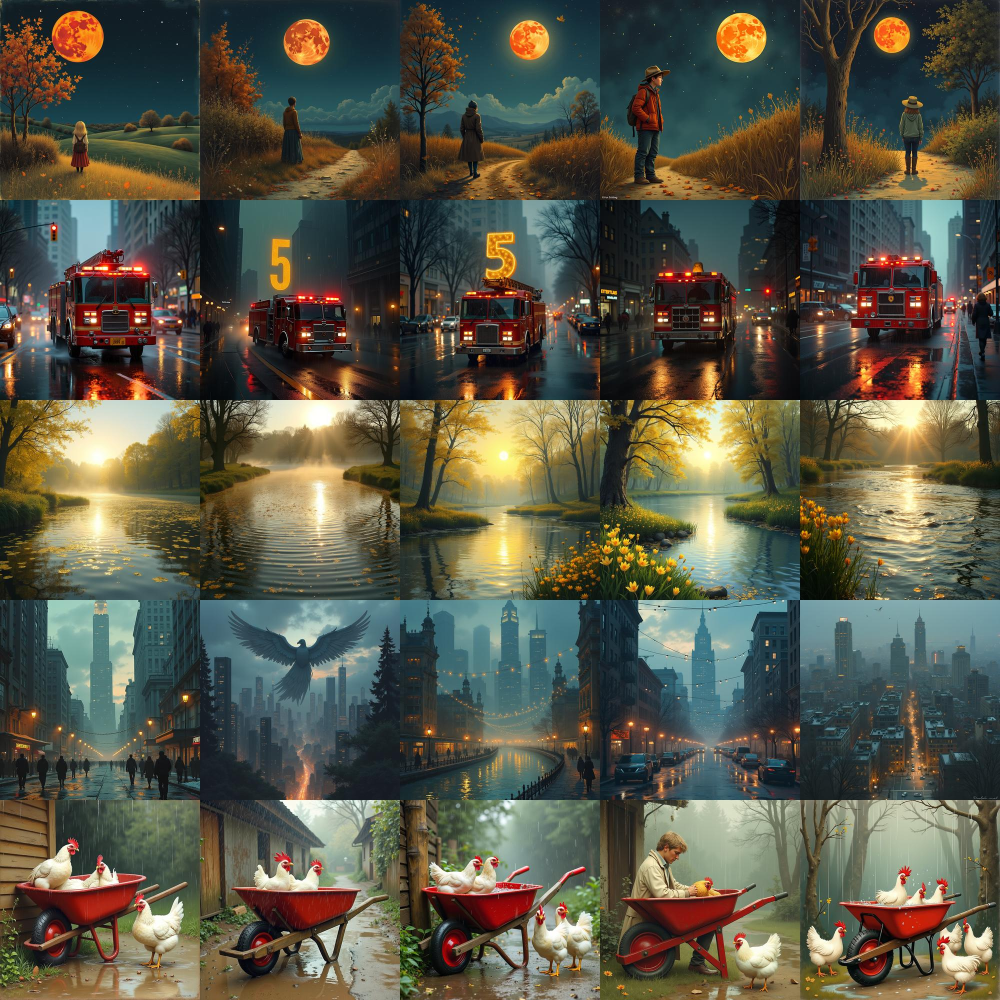

MemSlot: selecting text from long contracts
Natural language processing course project, UNC
MemSlot asks whether a compact set of words can preserve the information needed for document question answering. I trained attention slots over frozen RoBERTa representations to score words and used the scores to guide page selection before OCR and question answering.

Poetry and image variation
AI and language course project, CUHK
This project asks how poem style changes the variety of images generated from the same text. I generated image sets with FLUX and Stable Diffusion, then compared saved CLIP-based variation scores across Imagist and Romantic excerpts.
Text-KEN: comparing collections of text
Summer research with Prof. Farzan Farnia, CUHK
Text-KEN explores whether distributional differences between two text collections can be summarized from sentence embeddings. I implemented RBF-kernel comparisons and spectral-entropy analysis, then tested centering and whitening as embedding preprocessing choices.

Movability segmentation
Deep learning course project, CUHK
Movability segmentation treats semantic classes as a practical proxy for whether objects are fixed, movable, human, or vehicle-like. I adapted DeepLabV3 with a custom ASPP head and regrouped COCO-Stuff labels into four movability classes.